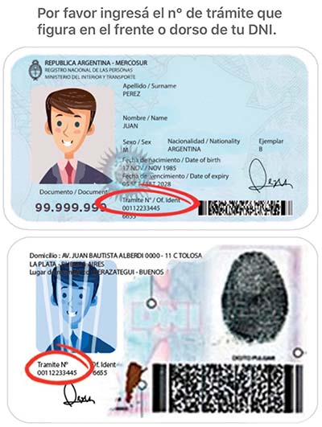

<mat-card>
    
    <div class="container-fluid p-0">
        <div class="row">
            <div class="col-12" style="text-align: end;">
                <button mat-flat-button (click)="close()" color="primary">Cerrar</button>
            </div>
        </div>
    </div>
</mat-card>